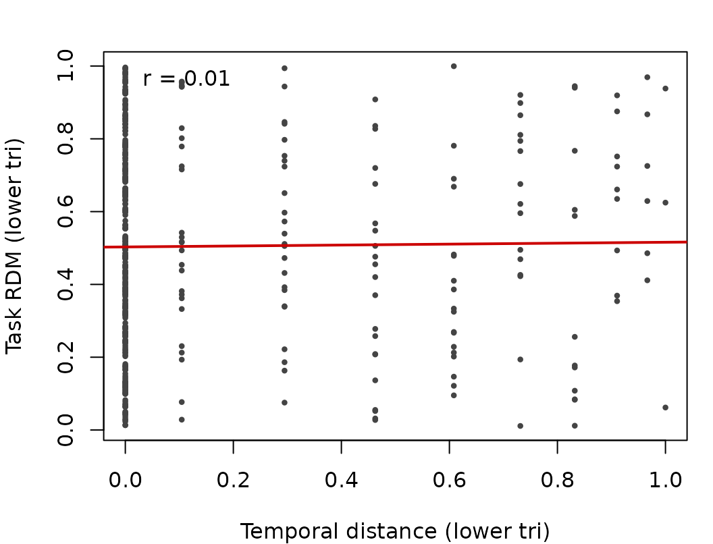
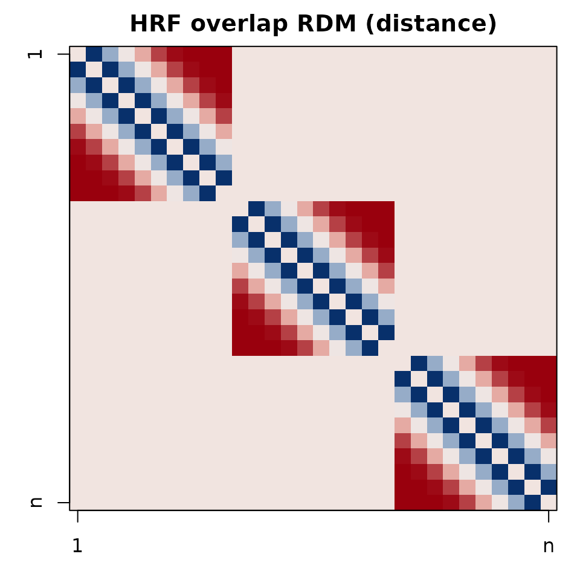
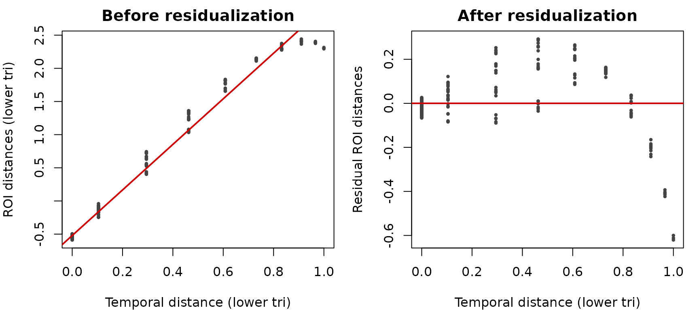

Temporal Confounds in RSA
Bradley Buchsbaum
Source:vignettes/Temporal_Confounds_in_RSA.Rmd
Temporal_Confounds_in_RSA.RmdIntroduction
Temporal proximity can induce similarity between trial patterns (adaptation, drift, HRF overlap). This vignette shows how to add temporal nuisance RDMs to RSA and MS-ReVE designs using convenience functions.
Trial-level temporal RDMs
set.seed(1)
n <- 30
onsets <- seq(0, by=1, length.out=n) # seconds
runs <- rep(1:3, each=10)
# Exponential decay, returned as distance
td <- temporal_rdm(onsets, block = runs, units = "sec", TR = 0.8,
kernel = "exp", metric = "distance")
td 1 2 3 4 5 6 7 8 9 10 11 12
2 14.0
3 39.5 14.0
4 62.0 39.5 14.0
5 81.5 62.0 39.5 14.0
6 98.0 81.5 62.0 39.5 14.0
7 111.5 98.0 81.5 62.0 39.5 14.0
8 122.0 111.5 98.0 81.5 62.0 39.5 14.0
9 129.5 122.0 111.5 98.0 81.5 62.0 39.5 14.0
10 134.0 129.5 122.0 111.5 98.0 81.5 62.0 39.5 14.0
11 0.0 0.0 0.0 0.0 0.0 0.0 0.0 0.0 0.0 0.0
12 0.0 0.0 0.0 0.0 0.0 0.0 0.0 0.0 0.0 0.0 14.0
13 0.0 0.0 0.0 0.0 0.0 0.0 0.0 0.0 0.0 0.0 39.5 14.0
14 0.0 0.0 0.0 0.0 0.0 0.0 0.0 0.0 0.0 0.0 62.0 39.5
15 0.0 0.0 0.0 0.0 0.0 0.0 0.0 0.0 0.0 0.0 81.5 62.0
16 0.0 0.0 0.0 0.0 0.0 0.0 0.0 0.0 0.0 0.0 98.0 81.5
17 0.0 0.0 0.0 0.0 0.0 0.0 0.0 0.0 0.0 0.0 111.5 98.0
18 0.0 0.0 0.0 0.0 0.0 0.0 0.0 0.0 0.0 0.0 122.0 111.5
19 0.0 0.0 0.0 0.0 0.0 0.0 0.0 0.0 0.0 0.0 129.5 122.0
20 0.0 0.0 0.0 0.0 0.0 0.0 0.0 0.0 0.0 0.0 134.0 129.5
21 0.0 0.0 0.0 0.0 0.0 0.0 0.0 0.0 0.0 0.0 0.0 0.0
22 0.0 0.0 0.0 0.0 0.0 0.0 0.0 0.0 0.0 0.0 0.0 0.0
23 0.0 0.0 0.0 0.0 0.0 0.0 0.0 0.0 0.0 0.0 0.0 0.0
24 0.0 0.0 0.0 0.0 0.0 0.0 0.0 0.0 0.0 0.0 0.0 0.0
25 0.0 0.0 0.0 0.0 0.0 0.0 0.0 0.0 0.0 0.0 0.0 0.0
26 0.0 0.0 0.0 0.0 0.0 0.0 0.0 0.0 0.0 0.0 0.0 0.0
27 0.0 0.0 0.0 0.0 0.0 0.0 0.0 0.0 0.0 0.0 0.0 0.0
28 0.0 0.0 0.0 0.0 0.0 0.0 0.0 0.0 0.0 0.0 0.0 0.0
29 0.0 0.0 0.0 0.0 0.0 0.0 0.0 0.0 0.0 0.0 0.0 0.0
30 0.0 0.0 0.0 0.0 0.0 0.0 0.0 0.0 0.0 0.0 0.0 0.0
13 14 15 16 17 18 19 20 21 22 23 24
2
3
4
5
6
7
8
9
10
11
12
13
14 14.0
15 39.5 14.0
16 62.0 39.5 14.0
17 81.5 62.0 39.5 14.0
18 98.0 81.5 62.0 39.5 14.0
19 111.5 98.0 81.5 62.0 39.5 14.0
20 122.0 111.5 98.0 81.5 62.0 39.5 14.0
21 0.0 0.0 0.0 0.0 0.0 0.0 0.0 0.0
22 0.0 0.0 0.0 0.0 0.0 0.0 0.0 0.0 14.0
23 0.0 0.0 0.0 0.0 0.0 0.0 0.0 0.0 39.5 14.0
24 0.0 0.0 0.0 0.0 0.0 0.0 0.0 0.0 62.0 39.5 14.0
25 0.0 0.0 0.0 0.0 0.0 0.0 0.0 0.0 81.5 62.0 39.5 14.0
26 0.0 0.0 0.0 0.0 0.0 0.0 0.0 0.0 98.0 81.5 62.0 39.5
27 0.0 0.0 0.0 0.0 0.0 0.0 0.0 0.0 111.5 98.0 81.5 62.0
28 0.0 0.0 0.0 0.0 0.0 0.0 0.0 0.0 122.0 111.5 98.0 81.5
29 0.0 0.0 0.0 0.0 0.0 0.0 0.0 0.0 129.5 122.0 111.5 98.0
30 0.0 0.0 0.0 0.0 0.0 0.0 0.0 0.0 134.0 129.5 122.0 111.5
25 26 27 28 29
2
3
4
5
6
7
8
9
10
11
12
13
14
15
16
17
18
19
20
21
22
23
24
25
26 14.0
27 39.5 14.0
28 62.0 39.5 14.0
29 81.5 62.0 39.5 14.0
30 98.0 81.5 62.0 39.5 14.0Visualizing temporal RDMs
Using in rsa_design
task_rdm <- as.dist(matrix(stats::runif(n*n), n, n))
rtemp <- temporal(onsets, block = runs, kernel = "exp")
rdes <- rsa_design(~ task_rdm + rtemp,
data=list(task_rdm=task_rdm, rtemp=rtemp, onsets=onsets, runs=runs),
block_var=~ runs, keep_intra_run=TRUE)
print(rdes)
RSA Design
- - - - - - - - - - - - - - - - - - - -
Formula:
|- ~task_rdm + rtemp
Variables:
|- Total Variables: 4
|- task_rdm: distance matrix
|- rtemp: distance matrix
|- onsets: vector
|- runs: vector
Structure:
|- Blocking: Present
|- Number of Blocks: 3
|- Block Sizes: 1: 10, 2: 10, 3: 10
|- Comparisons: All includedAssessing overlap with a task RDM
task_mat <- as.matrix(task_rdm)
tvec <- lower_tri(td_plot)
avec <- lower_tri(task_mat)
op <- par(mar=c(4,4,2,1))
plot(tvec, avec, pch=16, cex=.6, col="#444444",
xlab="Temporal distance (lower tri)", ylab="Task RDM (lower tri)")
abline(lm(avec ~ tvec), col="#cc0000", lwd=2)
legend("topleft", bty="n",
legend=sprintf("r = %.2f", stats::cor(tvec, avec)))
HRF-overlap confound
hrf_rdm <- temporal_hrf_overlap(onsets, durations=rep(1, n), run=runs,
TR=0.8, similarity="overlap", metric="distance")
hrf_mat <- as.matrix(hrf_rdm)
# Stretch dynamic range for plotting (rescale to 0..1 over lower-tri)
rng <- range(hrf_mat[lower.tri(hrf_mat)], na.rm = TRUE)
hrf_plot <- if (is.finite(diff(rng)) && diff(rng) > 0) (hrf_mat - rng[1]) / diff(rng) else hrf_mat * 0
op <- par(mar=c(3,3,2,1))
image(t(hrf_plot[nrow(hrf_plot):1, ]), axes=FALSE, col=cols(64))
box(); title("HRF overlap RDM (distance)")
axis(1, at=c(0,1), labels=c("1","n")); axis(2, at=c(0,1), labels=c("n","1"))
Multiple confounds at once
spec <- list(adj=list(kernel="adjacent", width=1),
exp3=list(kernel="exp", lambda=3),
hrf=list(kind="hrf", TR=0.8))
tc <- temporal_confounds(spec, onsets, run=runs, units="sec", TR=0.8)
str(tc)List of 3
$ adj : 'dist' num [1:435] 14 81.5 81.5 81.5 81.5 81.5 81.5 81.5 81.5 0 ...
..- attr(*, "Size")= int 30
..- attr(*, "call")= language temporal_rdm(index = onsets, block = run, kernel = item$kernel %||% "exp", width = item$width %||% 1L, power| __truncated__ ...
..- attr(*, "method")= chr "temporal:adjacent:distance"
$ exp3: 'dist' num [1:435] 14 39.5 62 81.5 98 ...
..- attr(*, "Size")= int 30
..- attr(*, "call")= language temporal_rdm(index = onsets, block = run, kernel = item$kernel %||% "exp", width = item$width %||% 1L, power| __truncated__ ...
..- attr(*, "method")= chr "temporal:exp:distance"
$ hrf : 'dist' num [1:435] 27 50.5 72 90 104.5 ...
..- attr(*, "Size")= int 30
..- attr(*, "call")= language temporal_hrf_overlap(onsets = onsets, durations = item$durations %||% NULL, run = run, TR = item$TR %||% TR,| __truncated__ ...
..- attr(*, "method")= chr "temporal_hrf:spm:overlap:distance"Condition-level nuisances for MS-ReVE
df <- data.frame(cond = factor(rep(letters[1:3], each=10)), run=runs)
mvdes <- mvpa_design(df, y_train=~cond, block_var=~run)
# Single nuisance via kernel
Ktemp <- temporal_nuisance_for_msreve(mvpa_design=mvdes,
time_idx=seq_len(nrow(df)),
kernel="exp", units="index",
metric="distance")
# Multiple nuisances from a spec (kernel + HRF)
ms_spec <- list(expk=list(kernel="exp", lambda=2), hrf=list(kind="hrf", TR=0.8))
ms_tc <- msreve_temporal_confounds(mvpa_design=mvdes,
time_idx=seq_len(nrow(df)), spec=ms_spec)
str(ms_tc)List of 2
$ expk: num [1:3, 1:3] 0 0 0 0 0 0 0 0 0
$ hrf : num [1:3, 1:3] 0 0 0 0 0 0 0 0 0
..- attr(*, "dimnames")=List of 2
.. ..$ : chr [1:3] "a" "b" "c"
.. ..$ : chr [1:3] "a" "b" "c"Recommendations
- Prefer within_blocks_only=TRUE for trial-level designs unless cross-run timing is meaningful.
- Use rank normalization for robust nuisance regressors.
- HRF overlap is most relevant when events are dense and durations > 0.
Appendix: Residualizing a toy RDM
# Simulate a toy ROI RDM as a mixture of task + temporal + noise
toy_roi <- scale(0.6 * task_mat + 0.3 * td_mat + matrix(rnorm(n*n, sd=.1), n, n))
diag(toy_roi) <- 0; toy_roi <- (toy_roi + t(toy_roi))/2
# Correlation before residualization
v_roi <- lower_tri(toy_roi)
v_temp <- tvec
cat(sprintf("Before residualization: cor(ROI, temporal) = %.2f\n", stats::cor(v_roi, v_temp)))Before residualization: cor(ROI, temporal) = 0.99
# Residualize ROI distances on temporal distances
resid_roi <- stats::lm(v_roi ~ v_temp)$residuals
cat(sprintf("After residualization: cor(resid ROI, temporal) = %.2f\n", stats::cor(resid_roi, v_temp)))After residualization: cor(resid ROI, temporal) = 0.00
# Visualize effect
op <- par(mfrow=c(1,2), mar=c(4,4,2,1))
plot(v_temp, v_roi, pch=16, cex=.6, col="#444444",
xlab="Temporal distance (lower tri)", ylab="ROI distances (lower tri)",
main="Before residualization")
abline(lm(v_roi ~ v_temp), col="#cc0000", lwd=2)
plot(v_temp, resid_roi, pch=16, cex=.6, col="#444444",
xlab="Temporal distance (lower tri)", ylab="Residual ROI distances",
main="After residualization")
abline(h=0, col="#cc0000", lwd=2)